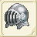
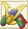
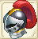

| 兜作成 | ||||
| 画像 | 名称 | 性能 | 材料 | |
| 台湾名表示 | ||||
| 兜作成Lv1 | ||||
| ハードレザーヘルム | DEF+?〜+? RSS+5〜+7 |
鹿の皮20 麻2 |
||
| 硬皮頭? | ||||
| ブロンズヘルム | DEF+9〜+17 RSS+3〜+6 |
銅3 麻3 |
||
| 銅製頭? | ||||
| 兜作成Lv2 | ||||
| ビロス | DEF+?〜+? RSS+10〜+14 |
銅4 鉄2 麻3 |
||
| 鐵板布? | ||||
| ガレア | DEF+14〜+28 RSS+6〜+10 |
銅5 鉄3 麻2 木綿2 |
||
| 銅鐵皮? | ||||
| 兜作成Lv3 | ||||
| ダイアデム | DEF+?〜+? RSS+15〜+21 |
銅4 鉄5 銀3 木綿2 |
||
| 金屬護額 | ||||
| アイアンヘルム | DEF+23〜+39 RSS+9〜+15 |
銅3 鉄10 銀3 フェルト1 |
||
| 鐵製頭? | ||||
| 兜作成Lv4 | ||||
| バーゴネット | DEF+26〜+38 RSS+20〜+28 |
銅4 鉄4 銀5 純銀5 | ||
| 霸葛頭? | ||||
| ホーンドヘルム | DEF+32〜+50 RSS+12〜+20 |
銅5 鉄5 銀5 純銀5 コットン2 |
||
| 角飾頭? | ||||
| クイーンブレス | RCV+2〜+5 CRI-1〜+1 CTR-1〜+1 HIT-1〜+1 AVD-1〜+1 クエストで使用 |
純銀5 銀1 金1 チタン鉱石20 フローズンアイリス20 |
||
| 兜作成Lv5 | ||||
| オープンヘルム | DEF+39〜+53 RSS+25〜+35 |
純銀5 金8 コットン5 |
||
| 開放式頭? | ||||
| グリークヘルム | DEF+42〜+61 RSS+15〜+25 |
純銀5 金5 コットン5 綿端5 |
||
| 葛理克頭? | ||||
|  | ゲオルグヘルム | DEF+42〜51 HIT+6 AVD-5 RSS+35〜40 |
ぐみの木20 純銀4 金4 アルマイト3 |
|
| 聖騎士之? | ||||
| 兜作成Lv6 | ||||
| バービュート | DEF+50〜+65 RSS+30〜+42 |
金5 白金8 綿端5 |
||
| 巴比克頭? | ||||
| エーベルヘルム | DEF+46〜+72 RSS+18〜+30 |
金5 白金5 綿端5 絹5 |
||
| 利刃頭? | ||||
| 兜作成Lv7 | ||||
| ナイトメット | DEF+60 RSS+28〜+37 護衛消費FP20%減 |
金8 白金4 ミスリル鋼5 絹4 マイティナイト1 |
||
| 騎士頭? | ||||
| スチールメット | DEF+63〜+83 RSS+24〜+38 |
白金5 ミスリル鋼5 ヒバ20 ホオノキ20 綿端9 |
||
| 鋼製頭? | ||||
| 水龍の兜 | DEF+110 護衛の消費FP50%減 |
ミスリル鋼10 マイティナイト2 魔族のクリスタル2 錆びた兜1 |
||
| 水龍之? | ||||
| 兜作成Lv8 | ||||
| ミストウインド | DEF+65 HIT-5 AVD+25 RSS+10 |
ミスリル鋼5 ミスリル銀5 ホオノキ20 絹5 誓いの証5 |
||
| 博流蓋爾頭? | ||||
| スパンゲンヘルム | DEF+73〜+94 RSS+32〜+48 |
鉄10 ミスリル銀5 スギ20 セレーネ糸5 |
||
| 鉚釘頭? | ||||
| スチールメット＋ | DEF+60〜+90 HIT-1 AVD+1〜+9 RSS+15〜+30 |
ミスリル鋼7 ミスリル銀5 スギ20 永久氷石20 ブルードラゴンの鱗20 |
||
| 鋼製頭?+ | ||||
| 兜作成Lv9 | ||||
| ガーズヘルム | DEF+? RSS+49〜+63 |
ミスリル銀3 レグネシウム5 ホオノキ20 スギ20 セレーネ糸3 |
||
| 羽毛頭? | ||||
| グラスホーン | DEF+85 HIT+3 RSS+30〜+36 護衛消費FP変化 |
レグネシウム8 ヒノキ20 セレーネ糸4 マイティナイト1 誓いの証1 |
||
| 龍? | ||||
| 兜作成Lv10 | ||||
| ナイツガーダー | DEF+? RSS+? |
ミスリル銀3 レグネシウム5 オリハルコン3 ヒノキ20 セレーネ糸3 |
||
| 白金頭? | ||||
| ミッシングガジェット | DEF+129 CRI-5 RSS+45 |
レグネシウム5 オリハルコン5 トネリコ20 魔族のクリスタル4 マイティナイト4 |
||
| 聖龍頭? | ||||
| 兜作成Lv11 | ||||
|  | 正義の兜 | DEF+106 CRI+6 AVD-5 RSS+77 |
アルマイト10 シングロール40 ミスリル銀7 レグネシウム5 誓いの証2 |
|
| 正義頭? | ||||
|  | アインヘルム | DEF+120 CTR+9 HIT+5 AVD-5 RSS+71 |
アルマイト9 トネリコ40 レグネシウム6 ミスリル銀6 ランドクローラーの甲殻2 |
|
| 靈力頭? | ||||